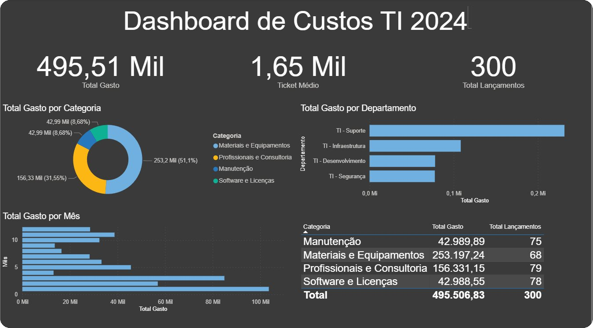
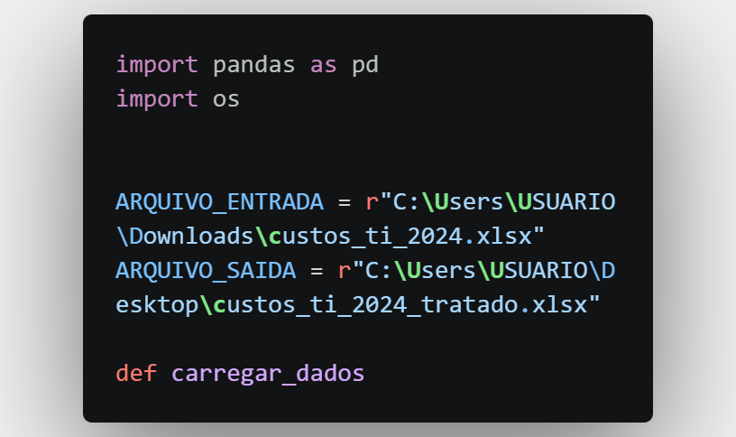
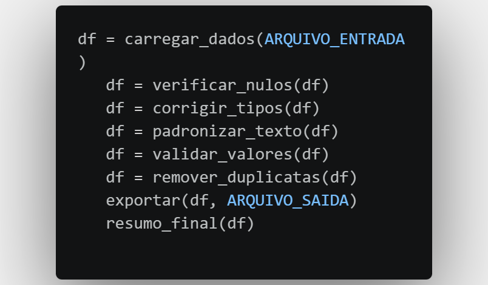
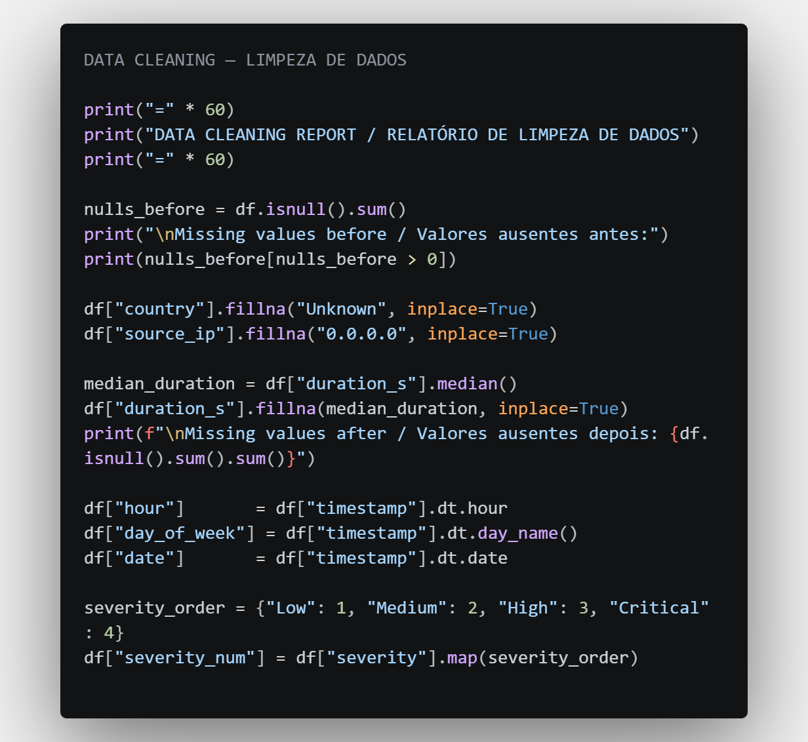
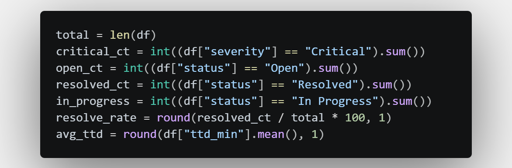
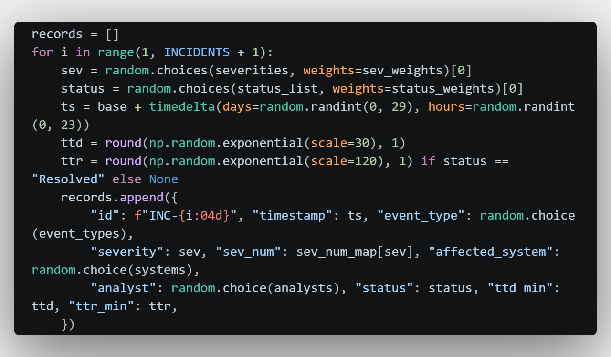

Computer Science · SQL · Python · Power BI · Tableau
I turn data into decisions — with focus on clear visualization, interactive dashboards and storytelling that supports decision-making.
I'm a Data Analyst with hands-on experience in SQL/MySQL for querying and managing relational databases, and Python (Pandas, openpyxl) for data processing, cleaning and automation.
I build interactive dashboards in Power BI with DAX measures and ETL pipelines using Power Query, and create data visualizations in Tableau.
I also work with Excel for advanced analysis and maintain clean, well-documented code with Git and GitHub.

Interactive Power BI dashboard for analyzing the operational costs of an IT department, covering categories such as materials, software licenses, professionals and maintenance.
The project includes a complete data pipeline — raw data is processed and validated in Python before being loaded into Power BI, where KPIs, charts and summary tables provide a clear overview of spending patterns across departments and months.


Python script responsible for the data treatment stage of the IT Cost Dashboard project. Loads the raw Excel file, checks for null values, corrects data types, standardizes text fields, validates financial values and removes duplicates.
Each step is logged to the terminal, making the pipeline transparent and easy to audit.

Python script responsible for the full data cleaning pipeline of the IT Cost Dashboard project. Loads a raw Excel file, checks for null values, corrects data types (dates, integers and decimals), standardizes text fields, validates financial values, removes duplicate records and exports a clean, analysis-ready file.
Each step is logged to the terminal, making the pipeline transparent and easy to audit. A final summary displays total records, date range, total spend and a breakdown by category.


Automates the generation of security reports with pure Python — no external templates. Calculates real SOC KPIs: TTD (Time to Detect) and TTR (Time to Resolve) using Pandas. TTR ignores still-open cases to avoid statistical distortion.
The HTML output is generated with f-strings and the trend chart is built in pure CSS — zero dependencies beyond the data stack. Opens in any browser.
Available for internships, junior opportunities and data analysis projects. I'll respond within 24 hours!